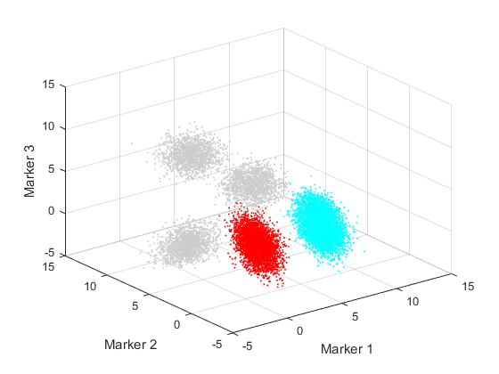
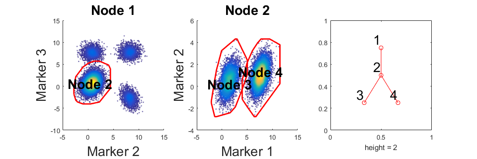
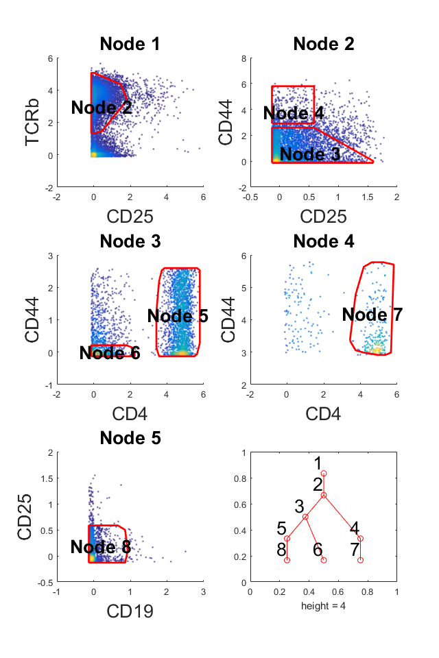
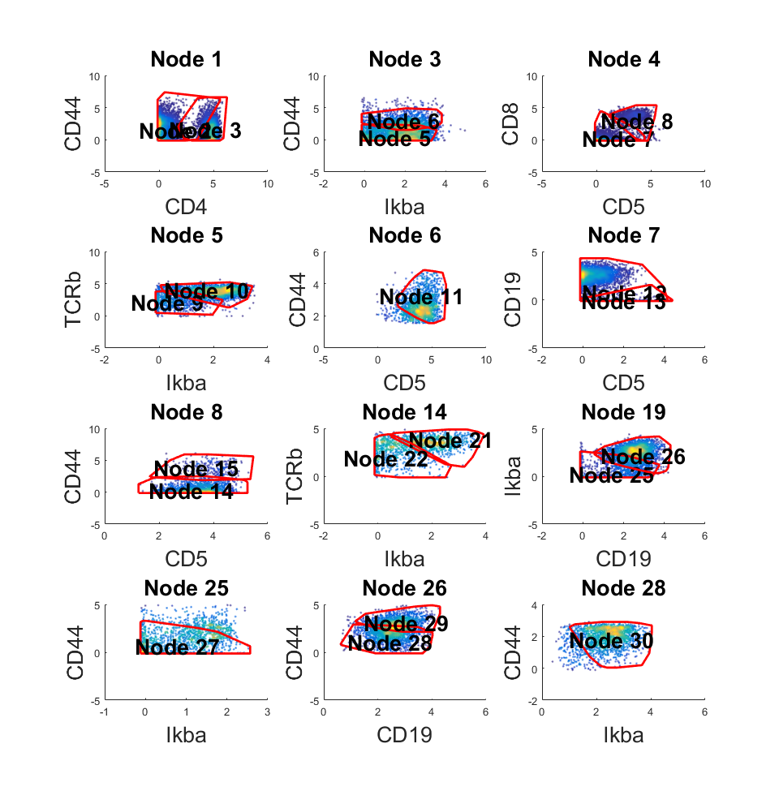
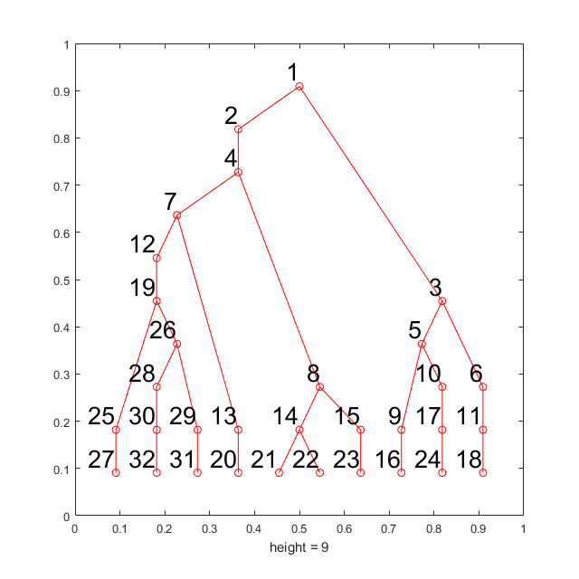
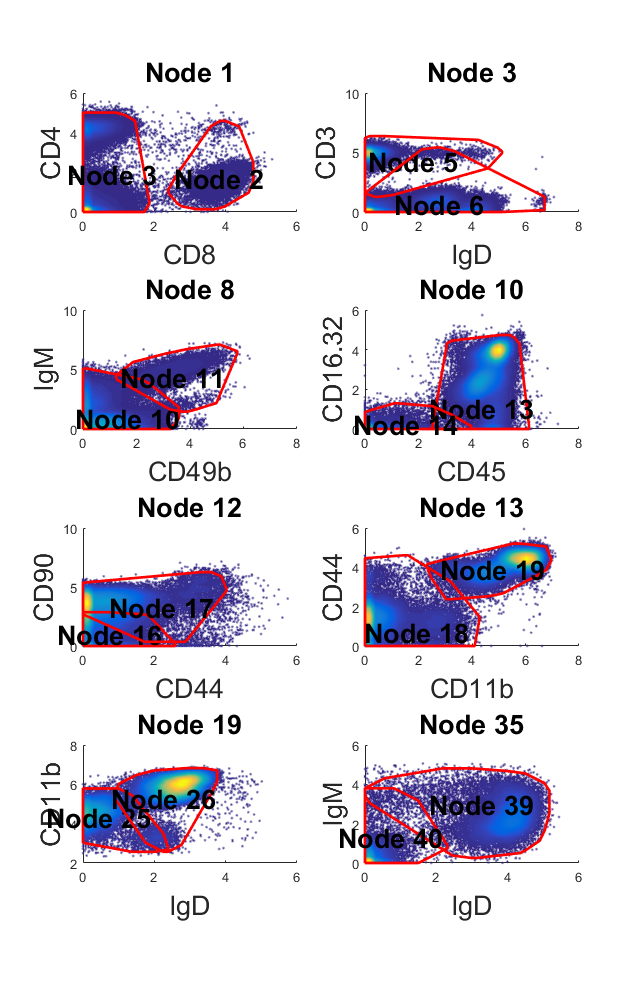
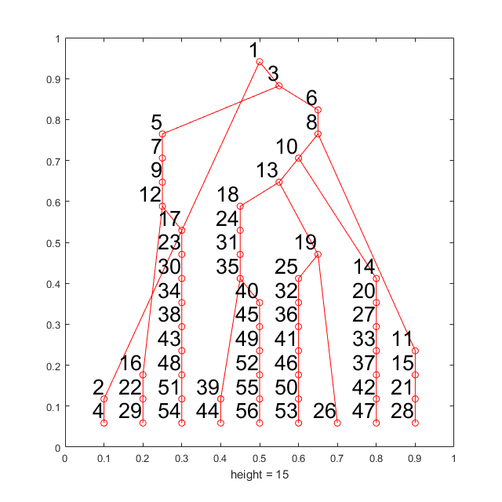

Generating 2D Gating Hierarhcy from Clustered Cytometry Data
Our algorithm cluster-to-gates(C2G) can visualize a clustered cytometry data in 2D gating hierarchy. The overall input to C2G are two variables: "data" and "label". "data" is a N-by-M matrix where N is the number of cells and M is the number of markers. "label" is a N-by-1 matrix and this matrix represent which cluster each cell belongs to (0 for ungated cells). In this page, we will demonstrate how to use C2G to generate gating hierarchy on a simulated data and on a CYTOF dataset that are manually gated. The software and testing data can be downloaded here .
Contents
- Initialization and load the simulated data
- Visualize the simulated data and pre-clustered simulated data in 3D
- Run the analysis on the simulated data
- Load CYTOF datasets
- Generate gating hierarchy for manually gated populations
- Generate gating hierarchy for K-means defined populations (K=10)
- Scaffold CyTOF data
Initialization and load the simulated data
This simulated data set contain 20000 cells, which consist of 5 populations.Two of the populations are addressed as known and labeled as 1 and 2. The cells in other populations are labeled 0 which means "ungated". A visualization of the original data is also shown in the following sections.
addpath('src') addpath('libs') load('testdata/simulated.mat','data','label'); markernames ={'Marker 1','Marker 2','Marker 3'}; fprintf('Size of "data" is %d-by-%d\n',size(data)); fprintf('Size of "label" is %d-by-%d\n',size(label));
Size of "data" is 20000-by-3 Size of "label" is 20000-by-1
Visualize the simulated data and pre-clustered simulated data in 3D
In real application, this section is not necessay.
col = [0.8 0.8 0.8;hsv(length(unique(label))-1)]; figure('Position',[680 478 560 420]); scatter3(data(:,1),data(:,2),data(:,3),1,col(label+1,:)); xlabel('Marker 1') ylabel('Marker 2') zlabel('Marker 3') axis([-5 15 -5 15 -5 15]);
Run the analysis on the simulated data
This section perform the analysis on the simulated data. If your data have no "ungated" cells, preclustered step can be skipped. If you skip precluster, the second and third parameter in function "C2G" should be the same. Compute local density step is also optional, it can decrease time cost in computing density when you want to try different parameter setting in "C2G". If you skipped it, no need to input the fourth parameter in "C2G".
% Precluster the simulated data rng(9464); preclustered_label = cluster_ungated(data,label); % Call main part of the program and return a object m that store the % results. The option "ignore_ratio" mean percentage of low density cells % ignored when compute overlap between different populations m = C2G(data,preclustered_label,label,'markernames',markernames,'showdetail',false); % Draw the obtained gating hierarchy % Show statistics m.view_gates(data,markernames,'n_lines',1,'onepanel',true); outtable = m.show_f_score(label);
Population Gate TP FP FN F-score
1 3 5411 18 0 0.998
2 4 9166 1 0 1.000
Normalized Mutual Information = 0.996
 Load CYTOF datasets
Read multiple fcs files. Each fcs file correspond to one cell population Automatically generate cell labels based on fsc files. FCS files are store in the "test" folder. "CD4_Effmen.fcs", "CD4_naive.fcs", and "CD8_naive.fcs" are cells of target populations and "ctr.fcs" contain all cells. Only work with surface protein markers.
clear close all addpath('src') addpath('libs') fdname = 'testdata'; [ori_data,ori_l,ori_markers]=load_mul_fcs(fdname,'ctr.fcs'); surface_idx = [3 4 6 8 9 11 12 13 22 24 25 27]; data = ori_data(:,surface_idx); markers = ori_markers(surface_idx); n_markers = length(markers);
Generate gating hierarchy for manually gated populations
% Precluster the ungated cells rng(9464) label = cluster_ungated(data,ori_l); % Perform the anlysis m_ori = C2G(data,label,ori_l,'markernames',markers,'showdetail',false); % Visualize the results m_ori.view_gates(data,markers,'n_lines',3,'ignore_small',0,'onepanel',true); m_ori.show_f_score(ori_l);
Population Gate TP FP FN F-score
1 7 216 13 8 0.954
2 8 2267 30 78 0.977
3 6 488 46 37 0.922
Normalized Mutual Information = 0.893
 Generate gating hierarchy for K-means defined populations (K=10)
rng(9464) km_l = kmeans(data,10); new_km_l = km_l; % Since all populiations is known, no need to pre-cluster % Perform the anlysis m_km = C2G(data,km_l,km_l,'markernames',markers,'showdetail',false); % Visualize the results m_km.view_gates(data,markers,'n_lines',4,'ignore_small',200); m_km.show_f_score(km_l);
Population Gate TP FP FN F-score
1 27 746 155 42 0.883
2 16 798 139 115 0.863
3 32 1204 176 85 0.902
4 24 1853 243 277 0.877
5 31 1418 161 74 0.923
6 18 1163 165 208 0.862
7 21 714 27 38 0.956
8 20 138 12 18 0.902
9 22 609 38 46 0.935
10 23 192 15 26 0.904
Normalized Mutual Information = 0.780
  Scaffold CyTOF data
This is a larger CyTOF dataset with 140k cells and 21 protein markers. This dataset is clustered by k-means where k equal to 10. This part will take around 10 minutes on a desktop.
[ori_data, marker] = readfcs_v2('testdata/bigdata/TIN_BLD1_Untreated_Day3.fcs'); % Transform the CyTOF data = flow_arcsinh(ori_data,5); % Select protein markers marker_idx = [10,16,17,18,19,21,22,24,29,31,32,33,39,40,41,46,47,49,50,51,52]; d = data(marker_idx,:)'; rng(9464); label = kmeans(d,10); % Perform the anlysis tic;m = C2G(d, label, label,'markernames',marker(marker_idx),'showdetail',false);toc; % Visualize the results w = warning ('off','all'); m.view_gates(d,marker(marker_idx),'ignore_small',3000,'n_lines',4); warning(w); m.show_f_score(label);
Elapsed time is 683.784486 seconds.
Population Gate TP FP FN F-score
1 29 15390 534 1172 0.947
2 47 6683 255 544 0.944
3 26 10863 14070 1338 0.585
4 44 19313 85 822 0.977
5 53 9833 301 1164 0.931
6 26 13421 11512 784 0.686
7 4 13324 35 442 0.982
8 54 29331 833 1526 0.961
9 28 6993 460 398 0.942
10 56 7804 218 726 0.943
Normalized Mutual Information = 0.859
 